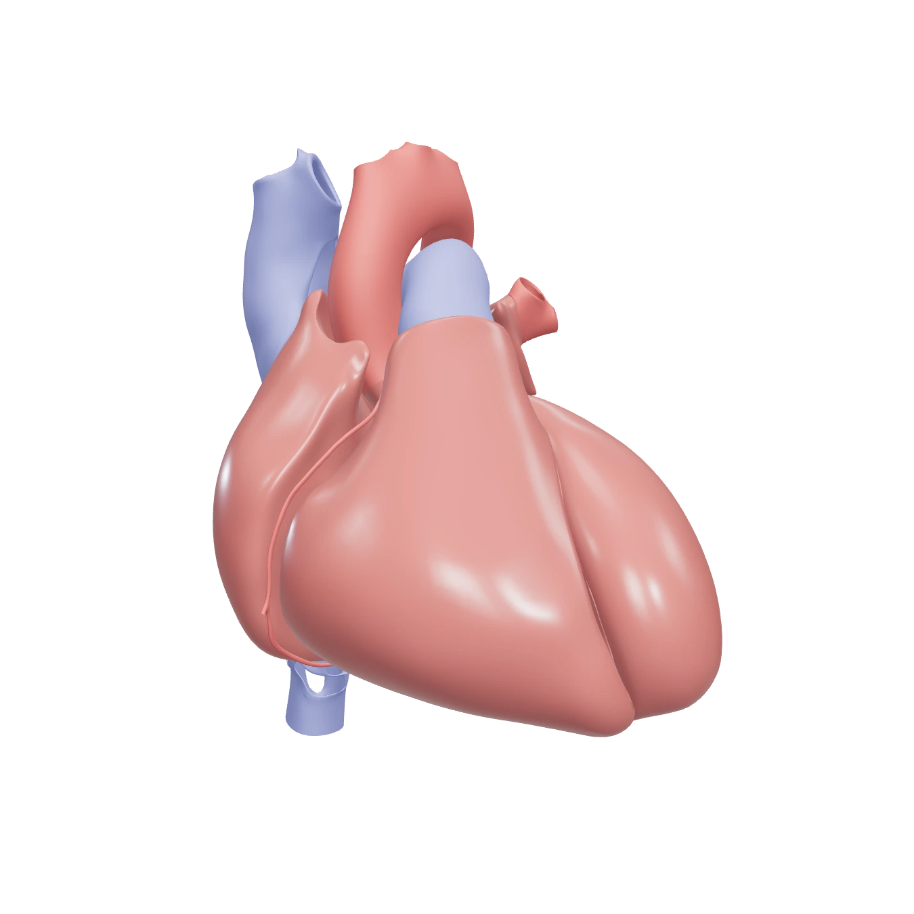
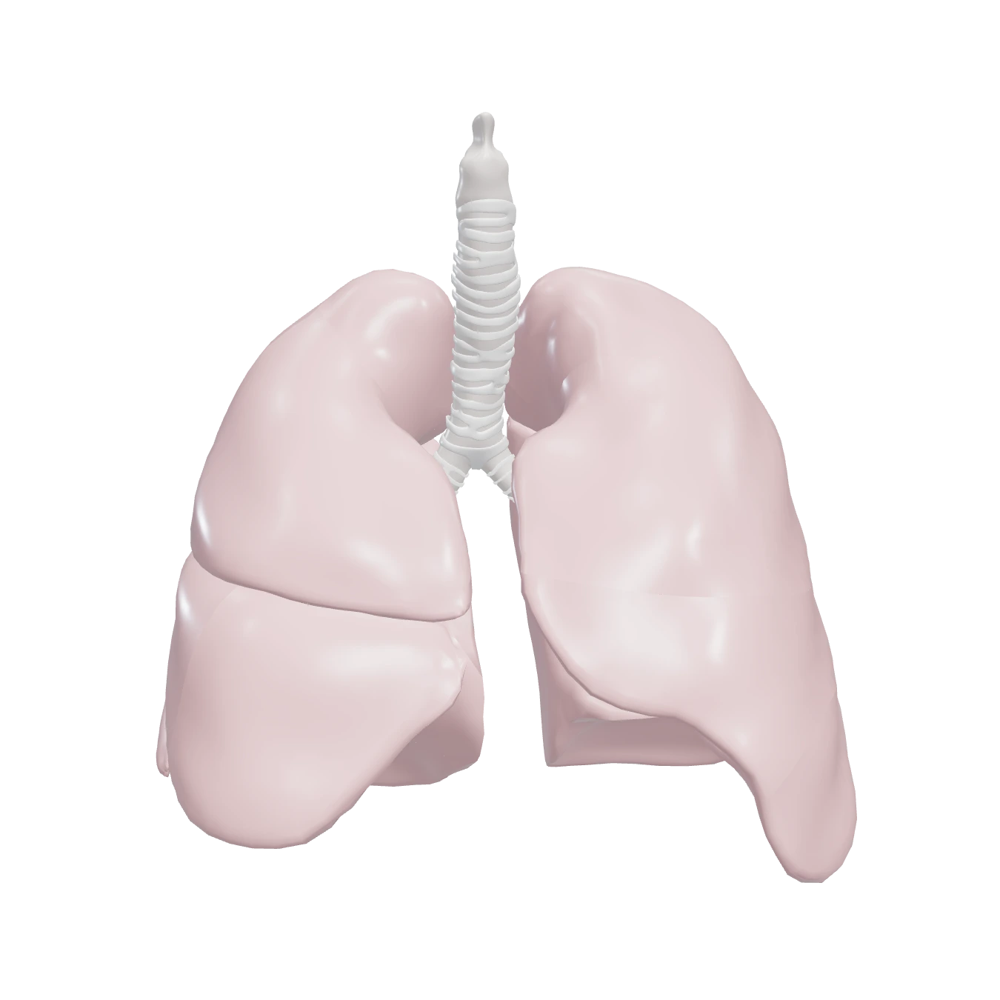

ARnatomy
Aplikasi pembelajaran anatomi berbasis Augmented Reality dengan asisten penjelasan AI
Muhammad Akyas Febryansah · V3925029
Nehan Raki Alfawzi · V3925013
D3 Teknik Informatika · Sekolah Vokasi UNS · Kelas B


Anatomi sulit dibayangkan dari gambar datar
Siswa SMP-SMA dan guru Biologi butuh media yang bisa diputar, diperbesar, dan dicoba langsung.
Model 3D dan AR
Putar, perbesar, lalu taruh organ di ruanganmu.
Asisten AI
Jawaban disusun dari isi 4 buku pelajaran.
Tugas belajar
Kuis, simulasi alur, dan rakit organ; skor dihitung server.
Riwayat belajar
Tiap bagian yang dipelajari tercatat, progres terlihat.
Progres keseluruhan sekitar 85%
Backend dan web selesai, mobile sebagian.
Backend
FR-01 sampai FR-19, 105 uji lulus, CI hijau
Web
Semua halaman berjalan dan bisa dicoba online
Mobile (iPhone)
3D, AR, asisten, kuis, simulasi sudah ada
Backend dan database
operasi API
tabel PostgreSQL
uji otomatis lulus
Front end: pilihan teknologi dan alasannya
Next.js 16, React 19, TypeScript, Tailwind, Three.js
- Halaman dirender di server, jadi cepat dibuka
- Penghubung ke backend (/api ke /v1): token disimpan di cookie httpOnly, tidak terbaca JavaScript
- Three.js menampilkan model 3D di browser tanpa plugin
- Tailwind menjaga tampilan konsisten
Flutter (iPhone), Provider, model_viewer
- Satu basis kode, tampilan mengikuti gaya web
- AR lewat AR Quick Look milik iOS, dipanggil dari kode Swift
- Flutter sesuai arahan kelas mobile; token disimpan di penyimpanan aman
- Tab bar Liquid Glass asli iOS 26
Asisten AI: menjawab dari buku (RAG)
Recall@5
(16 pertanyaan)
MRR
pencarian
jawaban benar
(tanpa RAG: 6/8)
akurasi klasifikasi
sistem organ
- Tanpa melatih ulang; tambah buku, bangun ulang indeks
- Jawaban bersumber buku, di luar materi ditolak
- Bahasa menyesuaikan jenjang SMP atau SMA
- Uji kecil (16 pertanyaan); satu pertanyaan masih gagal
- LLM masih bisa menambah fakta di luar buku
- Bergantung layanan LLM; sumber belum tampil di web
Yang bisa dicoba pengguna
- Jelajahi organ 3D: putar dan perbesar
- AR di iPhone: taruh jantung atau paru-paru seukuran aslinya
- Tanya asisten AI: jawaban dari isi buku (sumber tampil di mobile)
- Kuis dan simulasi: skor dihitung server
Tampilan mobile mengikuti gaya web, dengan Liquid Glass ala iOS 26.
Kendala, sisa pekerjaan, dan rencana
- Trial hosting habis, dipasang ulang; cadangan Docker Compose
- Model 3D tidak didukung AR iOS, dikonversi ke Draco dan USDZ
- SKPL menyebut Unity, kami memakai Flutter, dicatat sebagai revisi
- Rakit organ 3D di mobile
- Login Google di mobile
- Label menempel pada model saat AR
- AR belum diuji menyeluruh di iPhone
- Kuis belum dipisah per jenjang SMP/SMA
- Uji AR dan semua layar di iPhone
- Rakit organ dan login Google di mobile
- Latihan soal per jenjang untuk persiapan ujian
- Uji beban dan pasang di server kampus
- Perbarui SKPL (FR-16 s.d. FR-19)
Demo
Terima kasih
github.com/akyssssf/ARnatomy-production
github.com/akyssssf/arnatomy-mobile